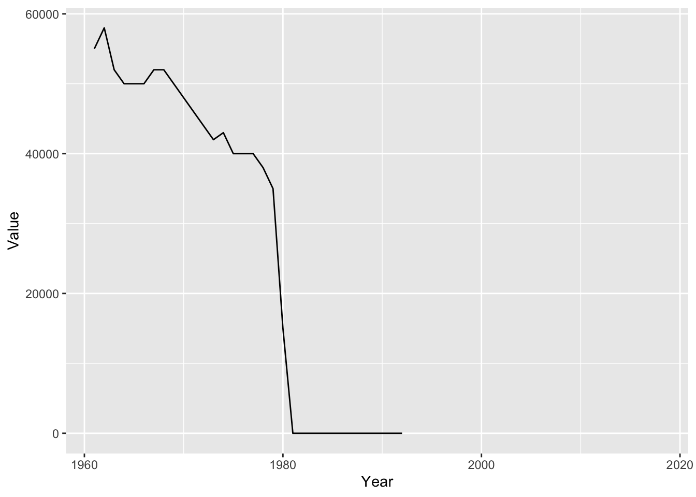

Code
library(tidyverse)
library(summarytools)
knitr::opts_chunk$set(echo = TRUE, warning=FALSE, message=FALSE)library(tidyverse)
library(summarytools)
knitr::opts_chunk$set(echo = TRUE, warning=FALSE, message=FALSE)Today’s challenge is to
Read in one (or more) of the following data sets, available in the posts/_data folder, using the correct R package and command.
library(readr)
FAOstat <- read_csv("_data/FAOSTAT_livestock.csv")Add any comments or documentation as needed. More challenging data may require additional code chunks and documentation.
Doing a Head of the Dataset to get a view of what the Data Looks Like
head(FAOstat)# A tibble: 6 × 14
Domai…¹ Domain Area …² Area Eleme…³ Element Item …⁴ Item Year …⁵ Year Unit
<chr> <chr> <dbl> <chr> <dbl> <chr> <dbl> <chr> <dbl> <dbl> <chr>
1 QA Live … 2 Afgh… 5111 Stocks 1107 Asses 1961 1961 Head
2 QA Live … 2 Afgh… 5111 Stocks 1107 Asses 1962 1962 Head
3 QA Live … 2 Afgh… 5111 Stocks 1107 Asses 1963 1963 Head
4 QA Live … 2 Afgh… 5111 Stocks 1107 Asses 1964 1964 Head
5 QA Live … 2 Afgh… 5111 Stocks 1107 Asses 1965 1965 Head
6 QA Live … 2 Afgh… 5111 Stocks 1107 Asses 1966 1966 Head
# … with 3 more variables: Value <dbl>, Flag <chr>, `Flag Description` <chr>,
# and abbreviated variable names ¹`Domain Code`, ²`Area Code`,
# ³`Element Code`, ⁴`Item Code`, ⁵`Year Code`
# ℹ Use `colnames()` to see all variable namesFAO.sm <- FAOstat %>%
select(-contains("Code"))
FAO.sm# A tibble: 82,116 × 9
Domain Area Element Item Year Unit Value Flag Flag Descr…¹
<chr> <chr> <chr> <chr> <dbl> <chr> <dbl> <chr> <chr>
1 Live Animals Afghanistan Stocks Asses 1961 Head 1300000 <NA> Official da…
2 Live Animals Afghanistan Stocks Asses 1962 Head 851850 <NA> Official da…
3 Live Animals Afghanistan Stocks Asses 1963 Head 1001112 <NA> Official da…
4 Live Animals Afghanistan Stocks Asses 1964 Head 1150000 F FAO estimate
5 Live Animals Afghanistan Stocks Asses 1965 Head 1300000 <NA> Official da…
6 Live Animals Afghanistan Stocks Asses 1966 Head 1200000 <NA> Official da…
7 Live Animals Afghanistan Stocks Asses 1967 Head 1200000 <NA> Official da…
8 Live Animals Afghanistan Stocks Asses 1968 Head 1328000 <NA> Official da…
9 Live Animals Afghanistan Stocks Asses 1969 Head 1250000 <NA> Official da…
10 Live Animals Afghanistan Stocks Asses 1970 Head 1300000 <NA> Official da…
# … with 82,106 more rows, and abbreviated variable name ¹`Flag Description`
# ℹ Use `print(n = ...)` to see more rowsprint(dfSummary(FAO.sm, varnumbers = FALSE,
plain.ascii = FALSE,
style = "grid",
graph.magnif = 0.70,
valid.col = FALSE),
method = 'render',
table.classes = 'table-condensed')| Variable | Stats / Values | Freqs (% of Valid) | Graph | Missing | |||||||||||||||||||||||||||||||||||||||||||||||||||||||
|---|---|---|---|---|---|---|---|---|---|---|---|---|---|---|---|---|---|---|---|---|---|---|---|---|---|---|---|---|---|---|---|---|---|---|---|---|---|---|---|---|---|---|---|---|---|---|---|---|---|---|---|---|---|---|---|---|---|---|---|
| Domain [character] | 1. Live Animals |
|
 |
0 (0.0%) | |||||||||||||||||||||||||||||||||||||||||||||||||||||||
| Area [character] |
|
|
 |
0 (0.0%) | |||||||||||||||||||||||||||||||||||||||||||||||||||||||
| Element [character] | 1. Stocks |
|
|
0 (0.0%) | |||||||||||||||||||||||||||||||||||||||||||||||||||||||
| Item [character] |
|
|
 |
0 (0.0%) | |||||||||||||||||||||||||||||||||||||||||||||||||||||||
| Year [numeric] |
|
58 distinct values |  |
0 (0.0%) | |||||||||||||||||||||||||||||||||||||||||||||||||||||||
| Unit [character] | 1. Head |
|
|
0 (0.0%) | |||||||||||||||||||||||||||||||||||||||||||||||||||||||
| Value [numeric] |
|
43667 distinct values |  |
1301 (1.6%) | |||||||||||||||||||||||||||||||||||||||||||||||||||||||
| Flag [character] |
|
|
 |
38270 (46.6%) | |||||||||||||||||||||||||||||||||||||||||||||||||||||||
| Flag Description [character] |
|
|
 |
0 (0.0%) |
Generated by summarytools 1.0.1 (R version 4.2.1)
2022-08-25
Find out information about flags to see which one that I would pick.
flag_description <- FAO.sm%>%
select(Flag,`Flag Description`)
unique(flag_description)# A tibble: 6 × 2
Flag `Flag Description`
<chr> <chr>
1 <NA> Official data
2 F FAO estimate
3 * Unofficial figure
4 Im FAO data based on imputation methodology
5 M Data not available
6 A Aggregate, may include official, semi-official, estimated or calculated…lifestocktypes<- FAO.sm%>%
select(Flag,`Flag Description`)
unique(flag_description)# A tibble: 6 × 2
Flag `Flag Description`
<chr> <chr>
1 <NA> Official data
2 F FAO estimate
3 * Unofficial figure
4 Im FAO data based on imputation methodology
5 M Data not available
6 A Aggregate, may include official, semi-official, estimated or calculated…Conduct some exploratory data analysis, using dplyr commands such as group_by(), select(), filter(), and summarise(). Find the central tendency (mean, median, mode) and dispersion (standard deviation, mix/max/quantile) for different subgroups within the data set.
FAO.sm %>%
filter(Flag=="A")%>%
group_by(Area)%>%
summarize(n=n())# A tibble: 28 × 2
Area n
<chr> <int>
1 Africa 522
2 Americas 464
3 Asia 522
4 Australia and New Zealand 376
5 Caribbean 464
6 Central America 406
7 Central Asia 243
8 Eastern Africa 522
9 Eastern Asia 522
10 Eastern Europe 522
# … with 18 more rows
# ℹ Use `print(n = ...)` to see more rowsFAO.sm %>%
filter(Flag=="A")%>%
group_by(Area)%>%
summarize(n=n())# A tibble: 28 × 2
Area n
<chr> <int>
1 Africa 522
2 Americas 464
3 Asia 522
4 Australia and New Zealand 376
5 Caribbean 464
6 Central America 406
7 Central Asia 243
8 Eastern Africa 522
9 Eastern Asia 522
10 Eastern Europe 522
# … with 18 more rows
# ℹ Use `print(n = ...)` to see more rowsBe sure to explain why you choose a specific group. Comment on the interpretation of any interesting differences between groups that you uncover. This section can be integrated with the exploratory data analysis, just be sure it is included.
Here is where I filtered by area
area_filter<-FAO.sm %>%
filter(Flag=="A")%>%
group_by(Area)%>%
summarize(n=n())I then wanted to see the averages by proportions.
area_filter%>%
mutate(prop = prop.table(n))# A tibble: 28 × 3
Area n prop
<chr> <int> <dbl>
1 Africa 522 0.0415
2 Americas 464 0.0369
3 Asia 522 0.0415
4 Australia and New Zealand 376 0.0299
5 Caribbean 464 0.0369
6 Central America 406 0.0323
7 Central Asia 243 0.0193
8 Eastern Africa 522 0.0415
9 Eastern Asia 522 0.0415
10 Eastern Europe 522 0.0415
# … with 18 more rows
# ℹ Use `print(n = ...)` to see more rowsI did a filter for Pigs and also wanted to see number of Pigs in Iran.
pig_analysis <- FAO.sm %>%
filter(Item=="Pigs",Area=="Iran (Islamic Republic of)")
pig_analysis# A tibble: 50 × 9
Domain Area Element Item Year Unit Value Flag Flag …¹
<chr> <chr> <chr> <chr> <dbl> <chr> <dbl> <chr> <chr>
1 Live Animals Iran (Islamic Rep… Stocks Pigs 1961 Head 55000 <NA> Offici…
2 Live Animals Iran (Islamic Rep… Stocks Pigs 1962 Head 58000 <NA> Offici…
3 Live Animals Iran (Islamic Rep… Stocks Pigs 1963 Head 52000 <NA> Offici…
4 Live Animals Iran (Islamic Rep… Stocks Pigs 1964 Head 50000 <NA> Offici…
5 Live Animals Iran (Islamic Rep… Stocks Pigs 1965 Head 50000 <NA> Offici…
6 Live Animals Iran (Islamic Rep… Stocks Pigs 1966 Head 50000 <NA> Offici…
7 Live Animals Iran (Islamic Rep… Stocks Pigs 1967 Head 52000 <NA> Offici…
8 Live Animals Iran (Islamic Rep… Stocks Pigs 1968 Head 52000 <NA> Offici…
9 Live Animals Iran (Islamic Rep… Stocks Pigs 1969 Head 50000 F FAO es…
10 Live Animals Iran (Islamic Rep… Stocks Pigs 1970 Head 48000 F FAO es…
# … with 40 more rows, and abbreviated variable name ¹`Flag Description`
# ℹ Use `print(n = ...)` to see more rowsI then did a data visualization by year and found something interesting. There was a massive drop in the number of Pigs around the year 1980, which is when the Islamic Revolution happened and Iran became a theocracy which made Pork banned to eat.
ggplot(data = pig_analysis, aes(x = Year, y = Value)) +
geom_line()
Using the Table function, I found that the data for Iran stopped being available after 1994.
(table(pig_analysis$`Flag Description`,pig_analysis$Year))
1961 1962 1963 1964 1965 1966 1967 1968 1969 1970 1971
Data not available 0 0 0 0 0 0 0 0 0 0 0
FAO estimate 0 0 0 0 0 0 0 0 1 1 1
Official data 1 1 1 1 1 1 1 1 0 0 0
1972 1973 1974 1975 1976 1977 1978 1979 1980 1981 1990
Data not available 0 0 0 0 0 0 0 0 0 0 0
FAO estimate 1 0 0 1 1 1 1 1 1 1 0
Official data 0 1 1 0 0 0 0 0 0 0 1
1991 1992 1993 1994 1995 1996 1997 1998 1999 2000 2001
Data not available 0 0 1 1 1 1 1 1 1 1 1
FAO estimate 0 0 0 0 0 0 0 0 0 0 0
Official data 1 1 0 0 0 0 0 0 0 0 0
2002 2003 2004 2005 2006 2007 2008 2009 2010 2011 2012
Data not available 1 1 1 1 1 1 1 1 1 1 1
FAO estimate 0 0 0 0 0 0 0 0 0 0 0
Official data 0 0 0 0 0 0 0 0 0 0 0
2013 2014 2015 2016 2017 2018
Data not available 1 1 1 1 1 1
FAO estimate 0 0 0 0 0 0
Official data 0 0 0 0 0 0